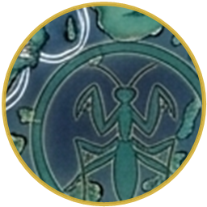

LE CLAN DE LA MANTE
Établi sur les Îles de la Soie et de l'Épice, le Clan de la Mante est l'unique Grand Clan de Rokugan dont la fondation ne remonte pas directement à un Kami vainqueur du Premier Tournoi. Fondé originellement comme Clan Mineur par Kaimetsu-Uo (fils d'Osano-Wo), le clan s'est hissé au rang de Grand Clan sous l'impulsion de son Champion charismatique, Yoritomo. Dominant le commerce maritime et la guerre navale, la Mante conjugue l'audace corsaire, le tir à l'arc d'élite et les bénédictions solaires et élémentaires.

1. Ascension & Mandat Maritime
Pendant plusieurs siècles, la Mante demeura un Clan Mineur isolé dans les archipels méridionaux. Au XIIe siècle, lors de la Guerre des Clans, Yoritomo fédéra sous sa bannière plusieurs Clans Mineurs : les maîtres archers du Clan de la Guêpe (Tsuruchi) et les prêtresses solaires du Clan du Mille-Pattes (Moshi), créant l'Alliance de la Mante.
Grâce à sa suprématie navale, au contrôle exclusif des routes de commerce maritime et à l'appui décisif de ses flottes lors des affrontements majeurs de l'Empire, Yoritomo obtint de la cour impériale la reconnaissance officielle de la Mante en tant que huitième Grand Clan de Rokugan.
Bleu océan, vert tempête et accents dorés. Kimonos pratiques et ajustés résistant à l'eau de mer, armures légères laquées au vernis marin et arsenal d'abordage (kama, harpons, javelines).
Histoire clanique : The Great Clans, p. 145-152. Droit maritime et mercenariat : Emerald Empire, p. 58-63. Combat naval et tempêtes : The Book of Water, p. 42-47.
Profil de Création PJ
- Divinité Protectrice : Osano-Wo & Dame Soleil
- Honneur de Base : 2,5 - 4,5 (Pragmatique)
- Champion Historique : Yoritomo
- Palais Principal : Kyuden Gotei
- Spécialité Martiale : Abordage & Kyujutsu (Archerie)
- Livre de Base 4e : Pages 120-122 & 219
2. Lignées du Clan & Familles Vassales (Familles Bushi en tête)
Livre de Base 4e Édition, p. 120-124, 219 ; The Great Clans, p. 145-153, 287, 289-291.Famille Yoritomo
+1 ConstitutionLignée fondatrice issue de Kaimetsu-Uo (fils d'Osano-Wo) et famille dirigeante de la Mante. Navigateurs, marchands pugnaces et combattants d'abordage maniant volontiers kama et armes paysannes, ils rejettent le mépris continental pour le négoce.
🌿 Familles Vassales (2 : Hogosha, Watanabe) ▾
- Hogosha : Descendants de Yoritomo Hogosha ; petite lignée dédiée à la diplomatie impériale et à la cour, fournissant la majorité des sensei de l'École de Courtisan Yoritomo. (Great Clans p. 289)
- Watanabe : Meilleurs charpentiers navals de la Mante au XIIe siècle ; leur lignée abrite également les derniers survivants de l'ancienne maison Gusai. (Great Clans p. 291)
Famille Tsuruchi
+1 PerceptionAncien Clan Mineur de la Guêpe intégré à l'Alliance de la Mante. Renommés comme les meilleurs archers de l'Empire, les Tsuruchi dédaignent l'obsession exclusive du sabre et servent souvent comme pisteurs et chasseurs de primes.
🌿 Familles Vassales (2 : Kagehisa, Suguru) ▾
- Kagehisa : Anciens rônin de la Lame de Guêpe fidèles à Tsuruchi à Kyuden Ashinagabachi ; contrairement aux autres Tsuruchi, ils manient le sabre plutôt que l'arc comme gardes d'honneur. (Great Clans p. 290)
- Suguru : Fondée à l'époque des Quatre Vents par une shugenja rônin ; petite lignée vouée à débusquer la corruption matérielle et spirituelle parmi les magistrats impériaux. (Great Clans p. 291)
Famille Moshi
+1 IntelligenceAncien Clan Mineur du Mille-Pattes, de tradition matriarcale fondée par Moshi (Isawa) Azami. Prêtresses dévouées à Dame Soleil et aux esprits des cieux, elles guident les flottes Mante et commandent à l'air et au feu.
🌿 Familles Vassales (1 : Goraiku) ▾
- Goraiku : Créée après l'intégration des Moshi pour canaliser l'ascension du général Moshi Goraiku ; seule branche Moshi dirigée par des hommes, vouée à la défense militaire de leurs terres. (Great Clans p. 289)
Famille Kitsune (ex-Clan du Renard)
+1 IntuitionAncien Clan Mineur du Renard rattaché à la Mante en 1159 (Core p. 219). Gardiens de la forêt Kitsune Mori entretenant un lien séculaire avec les esprits animaux de Chikushudo (Kitsune).
🌿 Familles Vassales (2 : Byako, Shudo) ▾
- Byako : Lignée issue au IIIe siècle d'un esprit-renard métamorphe ; shugenja particulièrement puissants qui ne quittent jamais les terres ancestrales du Renard. (Great Clans p. 287)
- Shudo : Descendants de Kitsune Shudo, samouraï formé chez le Lion qui revint défendre ses fiefs durant la Guerre des Clans ; yojimbo et gardes personnels des Kitsune. (Great Clans p. 291)
3. Doctrine Martiale & Pratique du Bushido
Références : Livre de Règles 4e Édition, p. 64-65, 91-94 ; Emerald Empire, p. 58-61.Le Courage (Yū) & Mérite
Pour la Mante, le courage consiste à affronter les périls sans chercher refuge derrière un lignage prestigieux. Le clan récompense le mérite individuel, l'initiative tactique et l'habileté concrète plutôt que les titres hérités.
Pragmatisme Économique
Contrairement aux clans continentaux qui considèrent le maniement de l'argent comme dégradant, la Mante assume ouvertement le contrôle des richesses et du commerce naval, qu'elle perçoit comme un instrument de puissance politique incontournable.
Diplomatie Clanique
Le clan partage avec le Crabe une dévotion marquée envers la Fortune Osano-Wo et le réalisme martial. Les échanges avec la Licorne sont fréquents sur le plan commercial. En revanche, les relations sont souvent heurtées avec la Grue, rivale pour le contrôle des flux côtiers, et avec le Lion, qui réprouve ses méthodes hétérodoxes.
4. Écoles de Base Officielles (Rangs 1 à 5)
Core pp. 120-122, 219 ; Great Clans pp. 166-169.Bénéfice : +1 Force • Honneur : 3.5
Compétences : Commerce, Défense, Jiujutsu (Armes Improvisées), Kenjutsu, Couteaux (Kama), Navigation, une compétence au choix.
Équipement : Armure légère, vêtements robustes, Daisho, 1 arme (ou paire de Couteaux), nécessaire de voyage, 10 koku.
📜 Techniques d'École (Rangs 1 à 5) ▾
- Rang 1 — La Voie de la Mante : Aucun malus de terrain difficile (déplacement/attaque) ; aucune perte d'Honneur/Gloire avec armes improvisées ou Paysan ; aucun malus de main secondaire avec arme Petite/Moyenne Paysan ; +1g0 à tous vos jets d'attaque.
- Rang 2 — La Voie de la Tempête : Chaque touche en mêlée réduit le ND d'Armure adverse de 5 contre vous pendant 2 Rounds (cumulable jusqu'à Rang d'École fois ; durée réinitialisée).
- Rang 3 — Frappe de la Mante : Attaques par Action Simple avec les armes Samouraï ou Paysan.
- Rang 4 — La Vague Roulante : Se déplacer de ≥ 1,5 m (5') octroie +10 ND d'Armure jusqu'au prochain Tour (sacrifiable avant une attaque pour 2 Augmentations Gratuites de Renversement).
- Rang 5 — Main d'Osano-Wo : Action Gratuite + 1 Vide garde +(Force) dés de dégâts ; +0g2 dégâts contre une cible À terre (Prone).
Bénéfice : +1 Réflexes • Honneur : 3.5
Compétences : Athlétisme, Défense, Chasse, Enquête, Kyujutsu (Yumi) 2, une compétence Bugei ou Noble.
Équipement : Armure légère ou d'ashigaru, vêtements robustes, Arc et 20 flèches, Wakizashi, nécessaire de voyage, 10 koku.
📜 Techniques d'École (Rangs 1 à 5) ▾
- Rang 1 — Toujours Prêt : +1g0 au total de tous vos jets d'attaque à l'arc et +3 à votre Score d'Initiative.
- Rang 2 — La Flèche Connaît le Chemin : Augmentation Gratuite pour Coup Précis (Called Shot) ; +2g0 à tous vos jets de dégâts à l'arc.
- Rang 3 — Le Dard de la Guêpe : Attaques à l'arc par Action Simple au lieu d'Action Complexe.
- Rang 4 — Vol de Non-Esprit : 1/escarmouche Action Complexe + 1 Vide : flèche (portée normale) ignorant armure et malus de Blessures/visibilité (pas d'Attaque Supplémentaire).
- Rang 5 — L'Œil de Tsuruchi : Attaque à distance par Action Complexe pour +4g1 à l'attaque et aux dégâts (non cumulable avec R4).
📜 Détails des Écoles Complémentaires (3) ▾
+1 Perception • H 4.5 • Affinité Eau / Déficience Terre (3 Eau, 2 Feu, 1 Air). Child of the Sea : 1 emplacement modifie les vents locaux d'1 degré (+1 Vide pour météo globale), jusqu'à Rang dépenses combinées/Round (rayon = Rang miles). Aug. Gratuite sur sorts Tonnerre.
+1 Agilité • H 4.5. R1 : +1g1 Intimidation (castes inf.) / +1g0 Social (samouraïs) et +Rang dés lancés en Chasse/Enquête sur proie. R2 : 1 Vide réussit Pègre pour localiser cible. R3 : Désarmement/Renversement −1 Aug. et rend Hébété vs coupable désigné. R4 : Action Simple yumi (+katana/couteau vs cible R3). R5 : Héraldique révèle Honneur & Désav. Sociaux/Mentaux ; attaque rend Hébété.
+1 Agilité • H 3.5. R1 : À terre sans malus ND/attaque (garde bonus vs tir) ; +1g0 Grapple & dégâts mains nues/improvisées/Petites. R2 : Feinte sacrifiant −5 dégâts = +5 ND (+10 À terre) ; Action Gratuite se mettre À terre. R3 : immunisé Fatigué/Hébété/ivresse (1 Simple si Sonné). R4 : Action Simple. R5 : 1 Vide = +4g1 attaque/dégâts (+4g2 À terre).
Bénéfice : +1 Volonté • Honneur : 2.5
Compétences : Commerce (Évaluation), Courtisan, Défense, Étiquette, Intimidation (Contrôle), Sincérité, une compétence Marchande ou de Connaissance.
Équipement : Vêtements extravagants, Wakizashi, 1 arme, nécessaire de calligraphie, nécessaire de voyage, 10 koku.
📜 Techniques d'École (Rangs 1 à 5) ▾
- Rang 1 — Le Devoir avant l'Honneur : Aucune perte de Gloire/Honneur pour Commerce, ni d'Honneur pour Intimidation (Contrôle). +Rang d'École Augmentations Gratuites contre rônins, bandits, pirates et hors-la-loi.
- Rang 2 — Cœur d'Orage : Sous Intimidation (Contrôle), votre Volonté compte comme +1 (+2 contre Statut inférieur).
- Rang 3 — Commander aux Vents : (Rang d'École)/session, relancez un échec de Sincérité avec Intimidation (Contrôle).
- Rang 4 — Volonté de la Tempête : Jet Opposé Intimidation/Volonté vs Étiquette/Volonté empêche la cible de dépenser du Vide et impose −3g0 Social contre vous pendant 1h.
- Rang 5 — Force en Toute Chose : +5g0 aux jets d'Intimidation ainsi que pour résister à Intimidation, Tentation ou Peur.
Technique (La Faveur du Soleil) : Durant le jour, vous gagnez une Affinité supplémentaire pour les sorts de Feu (perdue la nuit). Augmentation Gratuite sur tout sort portant le mot-clé Tonnerre.
Technique (Essence de Chikushudo) : Sens, Communion et Convocation fonctionnent avec les esprits animaux de Chikushudo autant qu'avec les kami. Augmentation Gratuite sur tout sort non nuisible ciblant un animal.
5. Écoles Avancées & Voies Alternatives Officielles
Textes officiels complets (Core pp. 248-249, 253 ; EE p. 143 ; Great Clans ; Air/Earth/Fire ; Strongholds ; IH1).⚖️ Règles & Effets détaillés ▾
R1 : +1 Statut (Mante/marchands) ; +2g2 par Vide sur Marchand ; 1/mois Commerce ND 25 rapporte marge en koku.
R2 : +30 XP en Serviteurs d'équipage (budoka = Bushi Yoritomo R1 ; 10 pts = Shugenja Moshi R1 Air 3).
R3 : 1 Vide remplace un jet Marchand (hors Artisanat) par 10g10 ; +3g0 Bugei à bord d'un navire.
⚖️ Règles & Effets détaillés ▾
Scoundrel (R2, Com. 2, Nav. 2) : +2 × Rang d'École en sus lors d'un Vide sur Athlétisme, Commerce, Navigation, Sincérité ou Dégradante. Navigator (R3, Navig. 3) : Action Simple + 1 Vide calme tempêtes dans Rang × 6 m (20') pendant Rang Rounds/heures (ou sorts Météo ≤ Rang contre emplacements = Maîtrise).
⚖️ Règles & Effets détaillés ▾
Portée des arcs +45 m (150') avant bonus Kyujutsu 5 (+50 %) ; Augmentations à l'arc illimitées par Vide/Compétence ; Coup Précis pour la moitié des Augmentations (arr. sup.).
⚖️ Règles & Effets détaillés ▾
Avec un kama dans chaque main, ajoutez votre rang de Couteaux à votre ND d'Armure et gagnez +3g0 aux jets de dégâts avec kama.
⚖️ Règles & Effets détaillés ▾
Clarity (R2) : Médit./Feu ND 15 = Esprit Clair & Mémoire Exacte (+1g0 si déjà) ou +1g0 Focus Iaijutsu pour Feu heures. Kitsune Artisan (R2) : 1 empl. Terre = +1g0 Artisanat matériaux naturels (max Rang). Tsuruchi Swordsman (R4) : Action Simple au sabre. Three Man Alliance (R2) : 1 Vide = +(écart de Gloire, max Rang) dés lancés contre Gloire supérieure.
⚖️ Règles & Effets détaillés ▾
R1 : +1 Rang pour sorts d'Eau. Action Complexe + 1 Vide lance éclair (3 m × Eau ; dégâts = Air en dés lancés/gardés ; +1g0 par emplacement sacrifié jusqu'à Rang).
R2 : +1 Rang Shugenja ; Eau +2 pour le calcul d'emplacements/jour.
R3 : +1 Rang pour Eau. Action Gratuite + 1 Vide = immunité sorts Tonnerre (Maîtrise ≤ 3) pendant 3 Rounds.
⚖️ Règles & Effets détaillés ▾
Guardian (R1, +1 Const., H 6.5) : En défendant un Moshi/fief, choisissez chaque Tour +1g0 attaque OU +1g1 au ND Armure du protégé sous Garde. Ranger (R2, Chasse 3) : Aug. Gratuite en Chasse et Discrétion rurale ; +2g0 Jets Opposés de détection.
⚖️ Règles & Effets détaillés ▾
Child (R3, Chasse 3, Chikushudo 2) : 2 empl. Terre + Méditation ND 15 (10 min sur terre nue) habite un animal naturel (meilleurs Traits physiques/mentaux, sans incantation). Sisters (R2) : Bannir kami d'Air requiert seulement 2 Aug. (Sens) / 3 Aug. (Communion).
⚖️ Règles & Effets détaillés ▾
Sculptors (R2, Sculpture 4) : +1g1 Artisanat/Art Sculpture sans malus météo/distraction. Emissaries (R4, Étiquette 4) : 1 Vide ajoute Volonté en dés lancés en Étiquette/Sincérité (ou en dés gardés en Étiquette [Courtoisie]).
Aucune école avancée ou voie alternative spécifique pour ce filtre.